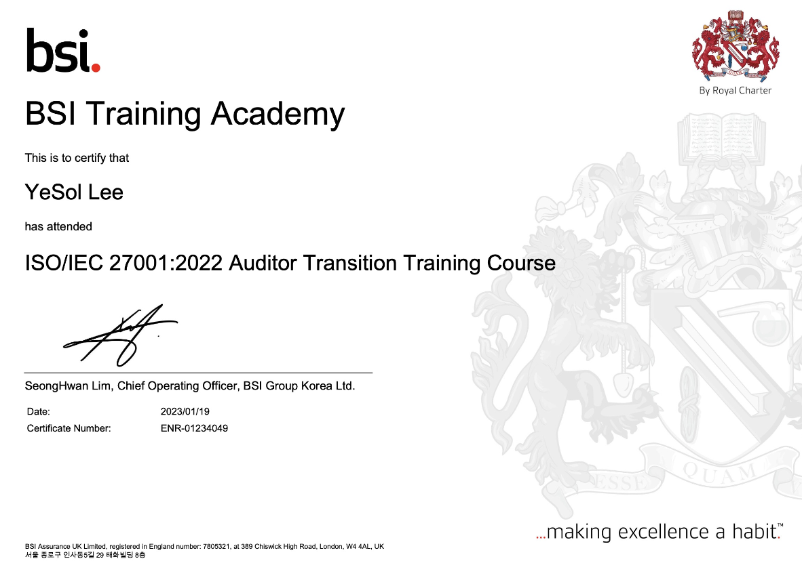
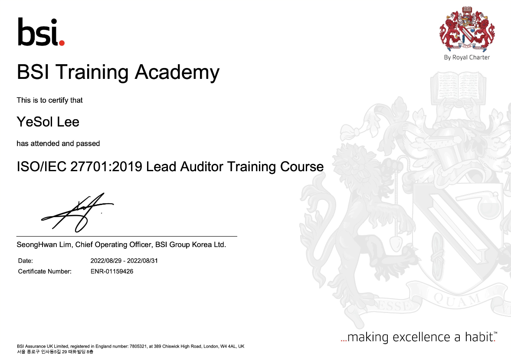

- 로그 기준 및 포멧 정의
- SPL 쿼리 작성
- 접속로그, 행위로그, 권한로그 기반 로그 점검
◼ 주요 성과
쿼리 작성을 통한 로그점검 수행으로, 업무 리소스 단축
▣ 개인정보 위수탁 점검 대응
◼ 프로젝트 상세
서비스를 이용하려는 고객사가 해당 서비스의 개인정보보호 수준에 대한 평가를 요청한 경우 및 사내 임직원의 개인정보를 타사에 위탁하는 경우의 개인정보보호 수준 진단
◼ 주요 업무
- 개정된 법령 및 사내 지침 등을 반영한 수탁사 대상 점검 항목 현행화
- 점검 회신 자료 검토
- 미흡 혹은 개선이행이 필요한 항목 도출
- 추가 증빙 요청 및 재검토 이행
- 위수탁 점검 대응을 위한 증빙자료 현행화
◼ 주요 성과
위수탁 개인정보의 분실,도난,유출,위조,변조 또는 훼손 방지 및 개인정보 안전성 확보
▣ 개인정보 영향평가
◼ 프로젝트 상세
개인정보를 활용하는 서비스의 신규 기획 또는 기존 개인정보처리시스템의 변경 시, 해당 서비스의 구축·운영·변경 등이 개인정보에 미치는 영향에 대한 사전 조사 및 검토
◼ 주요 업무
- 개정된 법령 및 사내 지침 등을 반영한 개인정보 영향평가 체크리스트의 주기적 현행화
- 신규 또는 변경된 서비스의 개인정보 현황 파악
- 개인정보 흐름도 및 흐름표 작성
- 개인정보 영향평가 점검 항목 별 준수사항 검토(증빙 검토 및 실사 테스트)
◼ 주요 성과
아니한 자 등에게 부과되는 과징금, 벌칙(징역 또는 벌금), 과태료 부과 이력 0건
▣ CSP안전성평가
◼ 프로젝트 상세
「전자금융감독규정」 제14조의2(클라우드컴퓨팅서비스 이용절차 등)에 명시되어 있는 금융회사 또는 전자금융업자가 클라우드서비스를 이용하고자 하는 경우 수행해야하는 CSP안전성평가 대응
◼ 주요 업무
- 전자금융감독규정기반 CSP안전성평가 항목 준수를 위한 표준 및 프로세스 작성·가이드
- GAP 분석을 통한 개선 필요 사항 도출
- 비조치 의견서 작성
- 평가 기반문서(범위정의서,자가점검결과서,이행증적 등) 준비
- 인터뷰 등 평가 대응·지원
- 평가 결과 정리 및 부분충족사항 F/U
◼ 주요 성과
SaaS 최초 CSP안전성평가 통과를 통하여, 금융권 대상 비즈니스에 기여
▣ 정보보호 인증 관리
◼ 프로젝트 상세
사내 보유의 정보보호인증(ISO/IEC 27K Series, CSA STAR 인증, ISMS 인증, CSAP) 취득 및 유지
◼ 주요 업무
- 운영현황 매트릭스를 통한 분기별 통제 현황 파악 및 운영 증적 관리
- 운영상의 취약점·위험을 식별하여 위험관리대상으로 지정 및 위험평가
- 분기별 위험현황 GAP 분석 및 개선 계획에 따른 이행 조치 현황 점검
◼ 주요 성과
정보보호인증 취득 및 유지를 통한 정보보호 성숙도 향상 및 서비스 신뢰성 확보
보유 자격증

ISO/IEC 27001 인증심사원
정보보호경영시스템을 구축, 인증 및 운영하기 위한 ISMS 심사 방법론 학습

ISO/IEC 27701 인증심사원
개인정보보호 관리 체계의 수립, 이행, 유지 및 지속적 개선을 할 수 있는 프레임워크 학습